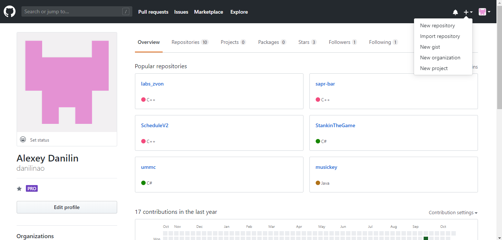

Информация о предыдущих проектах и ссылках на них содержится на странице "Обо мне"
Отчет о первой лабораторной работе:
-
1. Создание репозитария

-
2. Настройка "GitHub Pages"

-
3. Создание проекта в "Bootstrap Studio"
-
4. Клонирование репозитария
-
5. Экспорт проекта в папку репозитария

-
6. "Загрузка" шаблона в репозитарий
Вторая лабораторная работа заключалась в создании прототипа приложения "Конструктор дома".
-
1. Выбор "движка"
Раccматривалиось несколько вариантов:
- Чистый GL
- Unity 3D
- Qt
Выбор пал на Unity 3D, так как на нем быстрее всего получилось бы создать рабочий прототип и выложить на страницу проекта
-
2. Создание проекта

-
3. Разработка
Разработка проходила в несколько этапов
- Поиск и анализ существующих решений
- Сбор информации о вариантах домов
- Создание 3D моделей "заготовок" частей дома
- Разработка управляющего кода
- Сборка приложения под WebGL
-
4. Сборка и выпуск на сайте проекта
Отчёт по 3 лабораторной работе
Задание: Проверить работоспособность сети.
-
1. Построить топологию сетиРаccматривалиось несколько вариантов:

-
2. Адрессация в соответсвтии с вариантомРаccматривалиось несколько вариантов:


-
1. Построить топологию сетиРаccматривалиось несколько вариантов:
-
3. Маршрутизация

-
4. Проверка Работоспособности: Так, как в сети А слишком много узлов (1027) необходимо брать маску с префиксом /21, из-за чего структура адресса 192.168.X.Y,где Х-номер варианта (10) нарушается.